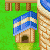

|
Quando voce quiser aumentar seus estabelecimentos da sua fazenda, va para casa de Gotz. Ele e o carpinteiro da Cidade Mineral / Mineral Town e vai construir qualquer coisa que voce precisa, por um preco. Gotz esta dentro da sua loja entre 11am e 4pm. Ele passa as manhas no lago da Mother's Hill, entao ele realmente nao volta pra casa dele ate as 11:10am. Gotz Fecha sua loja aos Sabados. Para que Gotz aumente um estabelecimento da sua fazenda, fale com ele por tras do balcao. Ele dara a voce uma lista de construcoes que ele pode trabalhar. A lista da loja de Gotz tambem vai mostrar o preco do aprimoramento e quantos pedacos de tocos de madeiras que voce precisa para ele fazer o trabalho. Para ter mais madeira use seu Machado nos tocos das arvores que estao no Mother's Hill. Voce tambem pode comprar madeira de Gotz mas e mais caro do que voce cortar os tocos. Todo dia os tocos das arvores reaparecerao entao voce pode cortar elas de novo para ter mais madeira. |
| Aprimoramentos do Gotz | |
|---|---|
| Madeira | 50G cada. compra um toco de madeira |
| Golden Wood / Madeira Dourada | 100.000G cada, aparece depois de voce conseguir 999 tocos de madeiras |
| Casa Aprimoramento #1 | 3.000G + 200 de madeira |
| Casa Aprimoramento #2 | 10.000G + 700 de madeira |
| Galinheiro Upgrade | 5.000G + 420 de madeira |
| Celeiro Upgrade | 6.800G + 500 de madeira | Casa de Ferias | 100.000.000G + 999 de madeira wood |
| Banheiro | 30.000G + 580 de madeira |
| janela com novo design | 25.000G + 300 de madeira |
| Casa de cahorro com novo design | 20.000G + 500 de madeira |
| Correio com novo design | 10.000G + 200 de madeira |
A casa de ferias, quando construida fica bem proximo a casa de Saibara. A TV dentro da casa de ferias ficara aptaa jogar o Gameshow da deusa e ganhar diferentes premios de que voce nornmalmente ganha durante o comeco do ano em sua casa na fazenda.
Os redesigns (janelas, correio e a casa do cachorro) irao aparecerna sua lista "Para Fazer" depois de todas os outros upgrades. Pode ser que tenha que Gotz reconstrua estes 3 itens em algum ponto no tempo e pode ter para que ele faca ,ais de uma vez se voce quiser. Se voce nao gostar do design voce pode pegar a construcao das "Red / Vermelho" versions, no qual sao os unicos que voce comecou no jogo. Gotz leva 3 dias para completar cada upgrade. correio vermelho correio azul correio estrangeiro casa do cachorro vermelha casa do cahorro azul casa do cachorro estramgeira janela com persianas janela sem persianas janela arredondada |